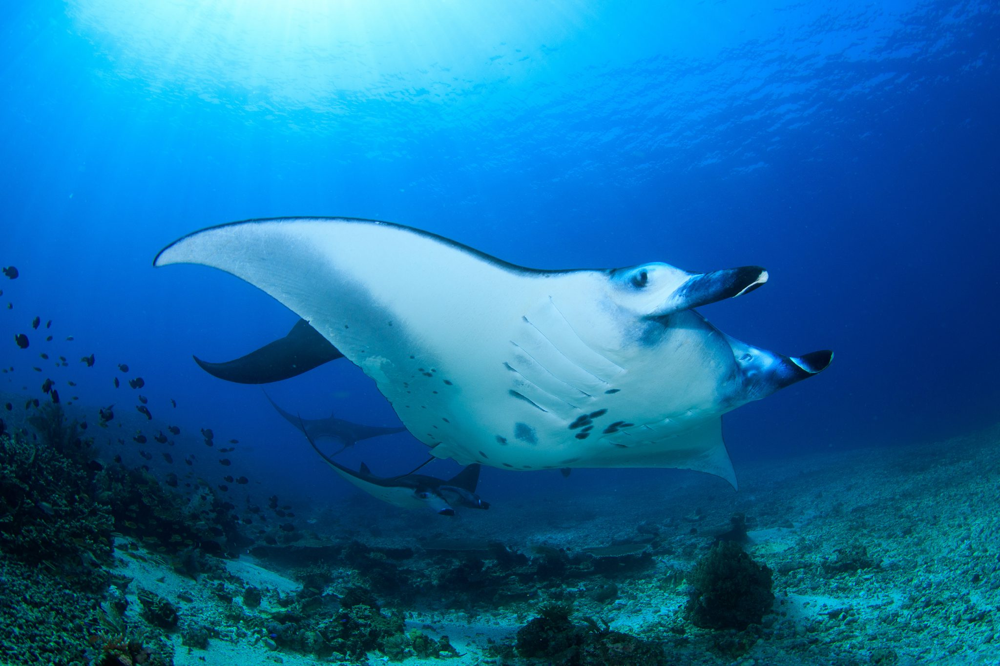
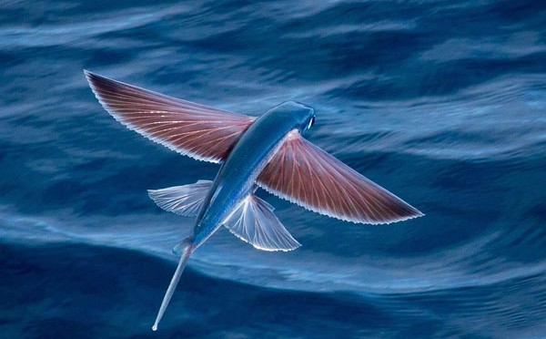

The Sunlight Zone
Where the ocean meets the sky, teeming with life and energy.

Bluefin Tuna
Thunnus thynnusOne of the fastest fish in the ocean, reaching speeds of 43 mph.

Manta Ray
Mobula birostrisGentle giants with wingspans reaching up to 23 feet.

Flying Fish
ExocoetidaeCan glide over 650 feet above water to escape predators.